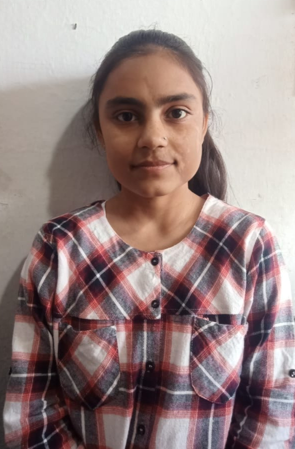

Vanshul Choudhary
Contact: cvanshul09@gmail.com
LinkedIn:
www.linkedin.com/in/vanshul-choudhary/
GitHub: github.com/Cvanshulll
|

|
About Me: I'm currently a second-year student of
Mathematics and Scientific Computing at the National Institute of
Technology Hamirpur.I am a programmer who loves to solve problems by
applying computer skills. I am always eager to work on challenging
tasks that will help me to learn new technology.
|
Education
-
National Institute of Technology, Hamirpur Himachal Pradesh, India
Bachelor of Technology in Mathematics and Scientific Computing
-
HP Board of School Education HP, India 12th — Percentage: 91.2 | 10th
— Percentage: 94.2
Work Experience
Backend Developer Intern
Training and Placement Cell, NIT Hamirpur
-
Developed RESTful APIs using Django Rest Framework for user
authentication and CRUD operations.
-
Utilized MYSQL as a database and integrated it with the Django project
to handle data persistence.
-
Collaborated with team members to ensure successful integration of the
APIs with the front-end components of the project, utilizing strong
problem-solving and communication skills.
Skills
- C/C++
- HTML
- CSS
- Javascript
Achievements
-
Solved over 660+ problems on multiple coding platforms. (LeetCode,
Competitive Coding)
-
Completed the Hacktoberfest challenge and contributed to repositories
by improving and modifying codebases.
Projects
OP_Updates
React, Django Rest Framework, API design, Problem-Solving
-
Developed OP_Updates, a web application that retrieves job
opportunities from an API endpoint and displays them to the user.
-
Used React for the front end and Django for the back end, and hosted
the application on Netlify.
Hosted Link:
opupdates.netlify
GitHub Link:
https://opupdates.netlify.app
Search Profiles
HTML, CSS, JavaScript
Frequentl Asked Questions
whose resume is this?
Vanshul Choudhary
whis ths eee they are ?
Vaxy th abc d
what is the objective was to create?
Vaxy th abc d